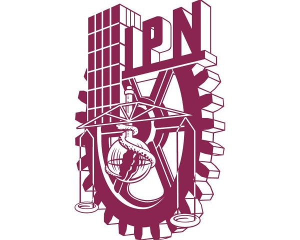
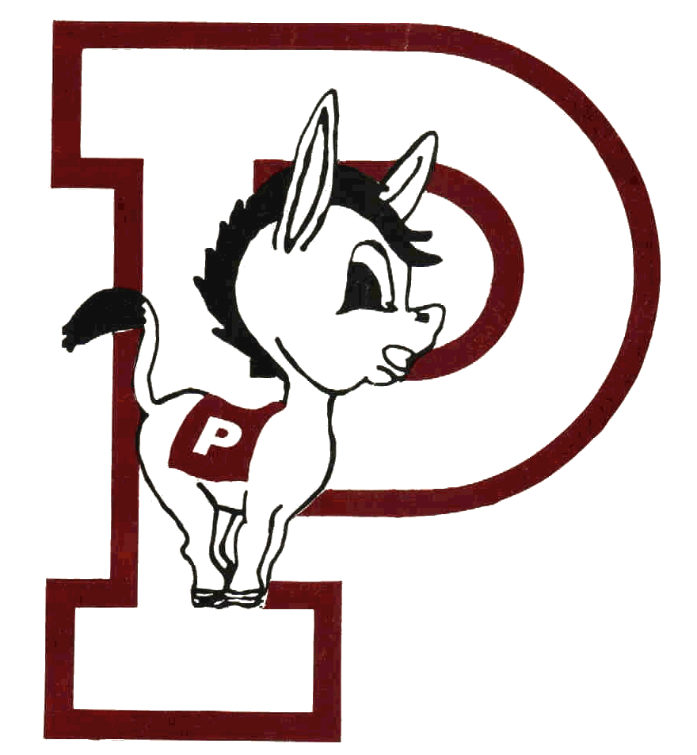

Instituto Politécnico Nacional
Institución educativa del Estado creada para consolidar, a través de la educación, la Independencia Económica, Científica, Tecnológica, Cultural y Política para alcanzar el progreso social de la Nación, de acuerdo con los objetivos Históricos de la Revolución Mexicana, contenidos en la Constitución Política de los Estados Unidos Mexicanos.
Información extraída de la Ley Orgánica del IPN
Misión
La Secretaría General es la instancia responsable de regular y conducir la política interna del Instituto, con el propósito de lograr la convivencia armónica, el desarrollo integral, una cultura de la protección civil y la seguridad de toda la comunidad politécnica. Para lograrlo, se actuará con una vocación de servicio, incluyente de compromiso, con apego a las normas y políticas en vigor.
Visión
Lograr una comunidad politécnica abierta, libre, incluyente, informada y crítica, con sólidos principios y una amplia participación en el quehacer institucional; que tenga confianza tanto en las autoridades como en la propia comunidad y que se apegue al orden jurídico y administrativo bajo un esquema de rendición de cuentas, donde se privilegie el diálogo, la negociación y la construcción de convergencias que fortalezcan al IPN.
Identidad Politécnica del IPN
Escudo

Lema
"La técnica al servicio de la patria"
La frase original, "La Técnica al Servicio de una Patria Mejor", fue propuesta en 1937 por el estudiante Jesús Robles Martínez durante el Primer Congreso Nacional de Estudiantes Técnicos en Chihuahua. Años después, la frase se modificó a la versión actual que representa los ideales y el compromiso social de la comunidad politécnica con México.
Himno
A continuación se mostrará el Himno del IPN:
Letra del Himno
Politécnico, fragua encendida
Con la chispa del genio creador
En ti forja su nueva estructura
Nuestra noble y pujante nación.
En la aurora de un día venturoso
Te dio vida la Revolución;
Una estrella te puso en las manos,
¡Que no apague su limpio fulgor!
Su libertad México crea,
Surge la Patria, nace la luz;
Nos convoca tu voz, Politécnico,
Nos conduce tu amor, juventud.
Mueve al hombre tu fe constructiva,
Se oye el ritmo de su despertar,
Sinfonía de las urbes fabriles
Alma agreste de un himno rural.
Corazón valeroso y ardiente
Que edificas baluarte de paz,
Solidaria su acción con tus filas,
Vive el pueblo tu hermosa verdad.
Su libertad México crea,
Surge la Patria, nace la luz;
Nos convoca tu voz, Politécnico,
Nos conduce tu amor, juventud.
Elementos Institucionales
Mascota del IPN

Es tradición que las Instituciones de Educación Superior, y particularmente los equipos deportivos, tengan una mascota; la del Instituto Politécnico Nacional es un burro blanco. Se conocen por tradición oral diferentes versiones que al paso del tiempo se funden entre la realidad y el mito. El caso del Instituto Politécnico Nacional es de las más conocidas, la razón es muy particular. Se dice que al establecer los límites del terreno donde se construía el Instituto, en la Ex Hacienda de Santo Tomás durante los años 30, quedó encerrada una burra blanca; al ser descubierta por los estudiantes e integrantes del primer equipo de fútbol americano la tomaron como su mascota. Con el paso de los años, la burra se convirtió en uno de los símbolos del Politécnico, fundamentalmente en el ámbito deportivo.
Decálogo
Soy Politécnico:
- Porque aspiro a ser todo un hombre
- Porque exijo mis deberes antes que mis derechos
- Por convicción y no por circunstancia
- Para alcanzar las conquistas universales y ofrecerlas a mi pueblo
- Porque me duele la Patria en mis entrañas y aspiro a calmar sus dolencias
- Porque ardo en deseos de despertar al hermano dormido
- Para prender una antorcha en el altar de la Patria
- Porque me dignifico y siento el deber de dignificar a mi institución
- Porque mi respetabilidad de joven y estudiante me impone la razón de respetar este recinto
- Porque traduzco la tricromía de mi bandera como trabajo, deber y honor
Porra Oficial del IPN
¡Huélum, Huélum! ¡Gloria!
¡A la Cachi Cachi Porra!
¡A la Cachi Cachi Porra!
¡Pim Pom Porra!
¡Pim Pom Porra!
Politécnico, Politécnico,
¡Gloria!